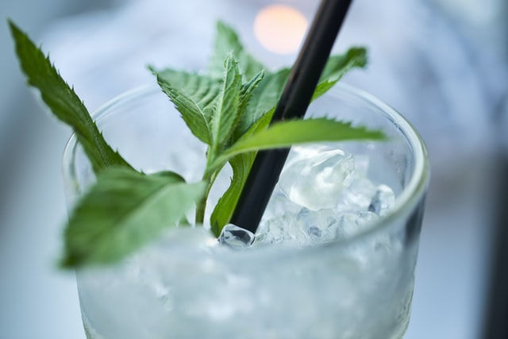

CAIPIRINHA
Ingredients
-
300 ml ginger ale 120 ml passion fruit juice 4 limes 8 teaspoons
of cane sugar Mint to garnish Crushed Ice
Method
First, wash the limes and cut each in 8 pieces. Fill the cane sugar into two glasses, add the limes and crush them. Now add the passion fruit juice and stir well. Finally, add the crushed ice and the ginger ale and garnish your mocktail with some mint! If you want to enjoy your Ipanema on the go or just want to prepare it beforehand, simply fill it into the TWEE vacuum bottle – it will keep it ice cold for hours!

IPANEMA
Ingredients
-
120 ml passion fruit juice 4 limes 8 teaspoons of cane sugar
Mint to garnish Crushed Ice
Method
Lorem iosum